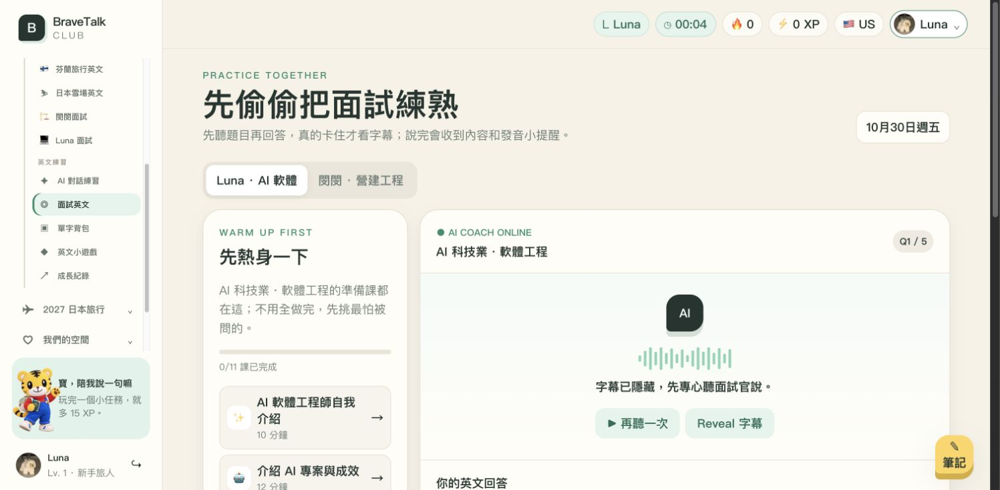
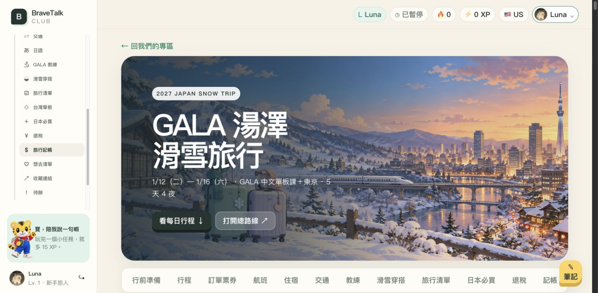

AI PoCs Built
AI 概念驗證與技術實作
02 / ENGINEERING IMPACT
AI 概念驗證與技術實作
獨立完成專案
重要大型政府專案
技術領導與完整系統開發
03 / EXPERIENCE
統計與資料分析背景，現負責 AI 團隊技術規劃、系統架構與跨部門交付。
EXPERIENCE
EXPERIENCE
使用 Python、R 進行資料清理、統計分析、視覺化與模型驗證。
EDUCATION
Master · Data & Business Analytics · France
EDUCATION
Department of Statistics and Information Science · B.S.
04 / FEATURED PROJECTS
每項專案都涵蓋角色、架構、挑戰、解法與量化影響。
ENTERPRISE AI PRODUCT
主導完整產品架構、前後端、資料庫、AI Backend、RAG、Agent、Workflow、模型部署與整合。
DOCUMENT INTELLIGENCE
FULL-STACK & HYBRID AI
COMPUTER VISION
以 SIFT、FLANN、Affine Transformation 完成影像對齊、穩定化與縮時影片輸出。
05 / SKILLS & ARCHITECTURE
API Architecture · Background Workers · SSE · Reliability · Human-in-the-loop
React · TypeScript · JavaScript · FastAPI · Flask · Node.js
RAG · AI Agent · OCR · Prompt Engineering · Structured Output · Hybrid AI
PostgreSQL · MySQL · Supabase · pgvector · DuckDB · ETL
GCP · AWS · Cloudflare · Docker · Docker Compose · Caddy
OpenCV · SIFT · FLANN · Affine Transformation · Video Processing
06 / PERSONAL SIDE PROJECT
獨立設計、開發與部署的 AI 英語口說及雙人旅行協作 PWA。


07 / TECH COMMUNITY & EVENTS
持續參與 AI、資料與雲端架構社群，將新技術帶回實際產品驗證。
Gemini · AI Studio · Vertex AI
View LinkedIn Post ↗Agentic Data · Analytics · Cloud
View LinkedIn Post ↗Startup · AI · Product
View LinkedIn Post ↗Google Cloud · Infrastructure · AI
View LinkedIn Post ↗